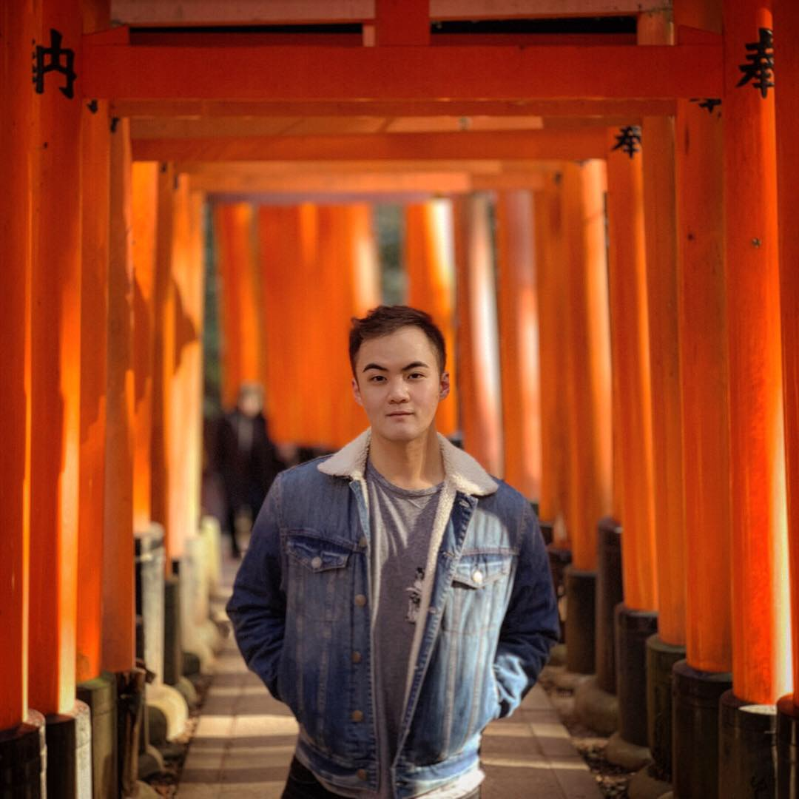
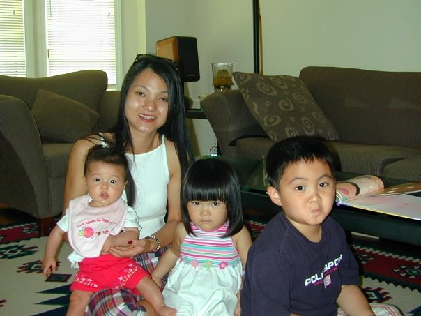
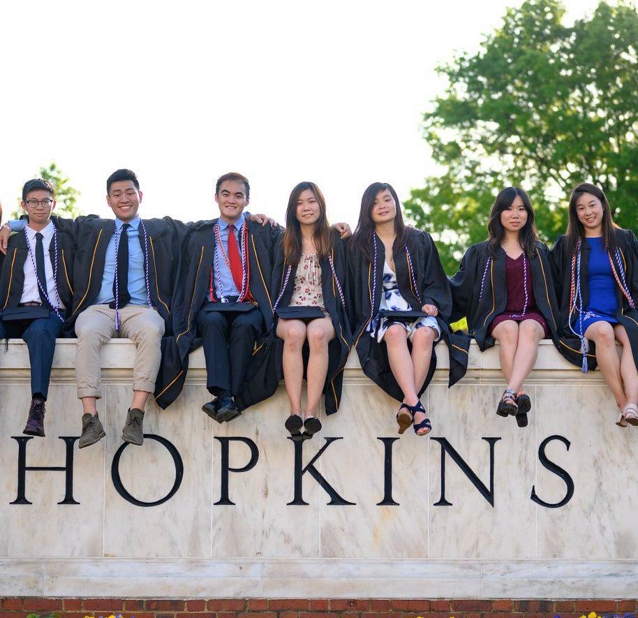
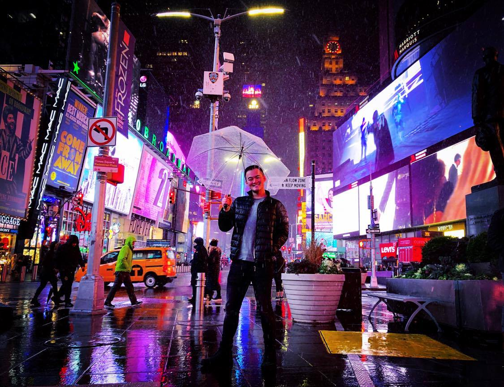

About Me
I'm a Chinese American born in Manhattan, New York City. Currently, I am an Advanced App Engineer responsible for providing clients with modern, innovative, technological solutions. Currently, I'm working for Accenture for one of their diamond clients in New York City, providing analytical and technical support for three complex API products for over +300 external clients globally. Prior to this, I was at Accenture for a diamond client in the Washington DC Area in Mobile and Web applications development and deliverables providing high tech solutions for consumer issues.
I graduated from Johns Hopkins University with a dual degree in Electrical and Computer Engineering and a minor in Computer Science in 2019. In the technical field, I've worked on smaller projects such as artificial intelligence chess playing algorithms, a physical therapy device for physically challenged children, and a valuables tracker bluetooth device at Johns Hopkins. In the summer of 2017, I designed and developed a cancer treatment implant at the Singapore Institute for Neurotechnology with Professor John Ho.
Outside of tech and medical technology, I enjoy hip hop and afrobeat dance, as well as cooking and eating food. In both fields, I was the Choreography head and Culinary Chair for Hopkin's Eclectics/SLAM dance teams and the Chinese Students Assocation from 2016-2019 leading both groups and organizing large scale events for the general student body.
My Projects
Timeline of My Life
-
American Born Chinese
I was born in Manhattan, New York in Chinatown. I lived here for a couple of years and also lived in Princeton Junction, New Jersey for the beginning of my life. I consider the US to be my home, and I try to be as "New Yorker" as possible. But considering I haven't really lived there all too long, I sometimes find it hard to say New York is my home. I then moved to Singapore in 2005.
1997 - 2004

-
Majulah Singapura!
I was very reluctant to move to Singapore in the beginning; I was so scared about leaving all the things I considered home. However, I looked forward to a new country, a new experience, and a new life! Slowly but surely, I grew to love Singapore and its melting pot of cultures, foods, and people. Singapore became my home and I made some friendships that lasted for years. Little did I know, I'd have to move to Beijing, China.
2005 - 2009
-
北京我爱你!
Living in China was a totally new experience. Having to deal with censorship and pollution made it tough to assimilate, but I grew fond of Beijing because it gave me a new love of my own culture and people, as well as great friendships that I made at my High School, The Western Academy of Beijing. From touring the mountains of 五台山 to the rivers of 桂林市, China was an amazing experience I would never give up.
2009 - 2015
-
Forever a Bluejay!
I then started my studies of Electrical and Computer Engineering/Comp Sci at the Johns Hopkins University. I joined student performance groups such as SLAM and the Eclectics, joined a research team to develop cancer treatment implants, and created my own app and device called ValuLarm! I tried soul food for the first time, learned Korean, and made lasting friendships at Hopkins.
2015 - 2019

-
Welcome to New York!
I then moved back to my hometown in New York! A lot of things have changed but the smells and sights of the city make me excited to be back. Currently, I'm working at Accenture for large diamond clients in Manhattan. I hope I can make the best of this experience and make a difference with my work!
2019 - Current

Cooking
During my childhood, my mother would try to feed me all these different types of foods and I would hate all of them except for fish porridge. I was such a picky child when I was young, but now I've become a passionate foodie who wants to try cooking and eating everything! Once I joined the Chinese Students Association at Johns Hopkins University, I fell in love with cooking, and survived Baltimore's barren Chinese food landscape by making my own food!
I've made a lot of different foods, from finding the right puff pastry for a sweet and nutty baklava, to lugging a whole sushi boat from Japan to make a sashimi/sushi boat platter for my friends. I've even tried my hand at a 6 hour croquembouche that took a lot of love and labor to make an amazing french confectionary dessert.
Currently, living in New York pushes me to try more and more foods, as well as trying my hand at different cultural cuisines. I'm currently documenting all my cooking feats at Chef TenderLi on Instagram! Come take a look, or see more of my cooking here!
Hope you follow me on my cooking journey!